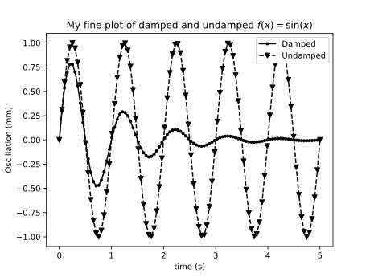

Matplotlib¶
Questions
Q1
Q2
Objectives
O1
O2
Matplotlib is the ‘standard’ Python plotting library. It is quite full-featured, and provides a MATLAB-like plotting API.
To use it, typically you start with
import matplotlib.pyplot as plt
# ...
x = linspace(-4, 4)
plt.plot(x, np.sin(x))
plt.show()
When using Jupyter notebooks, use the magic
%matplotlib inline
which will cause matplotlib plots to appear inline in the notebooks. Very convenient for quick analysis!
Matplotlib has two slightly different interfaces, a state machine interface similar to MATLAB and an object based interface. The state machine interface is quick and easy to get started, but since it’s based on hidden global state behind the scenes, for more complex stuff it might get confusing. Below is an example using the state machine interface.
import numpy as np
import matplotlib.pyplot as plt
x = np.linspace(0.0, 3.0)
y1 = np.cos(2 * np.pi * x) * np.exp(-x)
y2 = np.cos(2 * np.pi * x)
plt.subplot(2, 1, 1)
plt.plot(x, y1, 'o-')
plt.title('A tale of 2 subplots')
plt.ylabel('Damped oscillation')
plt.subplot(2, 1, 2)
plt.plot(x, y2, '.-')
plt.xlabel('time (s)')
plt.ylabel('Undamped')
plt.show()
And here is the same thing, but using the object-based interface
import numpy as np
import matplotlib.pyplot as plt
x = np.linspace(0.0, 3.0)
y1 = np.cos(2 * np.pi * x) * np.exp(-x)
y2 = np.cos(2 * np.pi * x)
fig = plt.figure()
ax = fig.add_subplot(211)
ax.plot(x, y1, 'o-')
ax.set_title('A tale of 2 subplots, OO style')
ax.set_ylabel('Damped oscillation')
ax = fig.add_subplot(212)
ax.plot(x, y2, '.-')
ax.set_xlabel('time (s)')
ax.set_ylabel('Undamped')
plt.show()
Exercise 4.1¶
Try to recreate the figure below:
Exercise 4.2¶
Create 1000 normally distributed numbers with \(\mu = 0\) and \(\sigma = 10\). Then create a histogram plot with 50 bins.
Exercise 4.3¶
Often it’s useful to be able to plot things on a logarithmic scale. Create a plot with 4 subplots, one with a linear scale, one with logarithmic scale on the x-axis, one with logarithmic scale on the y-axis. Then create 4 functions, such that each will produce a straight line in one of the plots, and plot them.
Image and pseudocolor plots¶
Matplotlib can also plot 2D data such as images. A common type of 2D plot is the pseudocolor plot, where you want to convert a scalar value in some range into a color value. This means that you must map the range of values into a colormap. Things to think about when selecting a colormap:
The map should be perceptually uniform. From https://bids.github.io/colormap/ : A “perceptually uniform” colormap is one for which the “perceptual deltas” plot makes a simple horizontal line. (This is essentially the derivative of the colormap in perceptual space with respect to the data. We want our colormap to have the property that if your data goes from 0.1 to 0.2, this should create about the same perceptual change as if your data goes from 0.8 to 0.9. For color geeks: we’re using CAM02-UCS as our model of perceptual distance.)
It should look good when rendered in gray-scale, e.g. if someone prints the picture on a black-and-white printer. Or sometimes per-page costs in journals are lowers if everything is BW.
It should make sense to people with the most common type of color blindness (red-green). In practice this means the color maps shouldn’t use both green and red colors, so that they are not confused.
Bad news: The commonly used rainbow (or “jet” as it’s often called) is very bad when comparing against these criteria! NEVER USE IT! It was the default in matplotlib < 2.0, and in MATLAB for a long time.
Good news: Matplotlib >= 2.0 has sane defaults here! See changes in default styles for matplotlib 2.0 . In particular, compare matplotlib < 2.0 default colormap and the matplotlib >= 2.0 default colormap. As an aside, the 2.0 default colormap (“viridis”) is similar to the default colormap in current versions of MATLAB (“parula”).
{kind=link}
{kind=link}
One case where you should NOT use viridis is if your data has some “natural” zero point. In that case it’s better to use a “cool-warm” style colormaps, see “Diverging Colormaps” at the matplotlib colormap reference.
N = M = 200
X, Y = np.ogrid[0:20:N*1j, 0:20:M*1j]
data = np.sin(np.pi * X*2 / 20) * np.cos(np.pi * Y*2 / 20)
fig, (ax2, ax1) = plt.subplots(1, 2, figsize=(7, 3))
im = ax1.imshow(data, extent=[0, 200, 0, 200])
ax1.set_title("v2.0: 'viridis'")
fig.colorbar(im, ax=ax1, shrink=0.8)
im2 = ax2.imshow(data, extent=[0, 200, 0, 200], cmap='jet')
fig.colorbar(im2, ax=ax2, shrink=0.8)
ax2.set_title("classic: 'jet'")
fig.tight_layout()
Exercise 4.4¶
Find an image on the internet or already on the machine you’re working
on, load it into a NumPy array (you can use imageio.imread() for
this), and see if you can create an Andy Warhol-like print by using a
suitable colormap.
(lesson here)
Keypoints
K1
K2